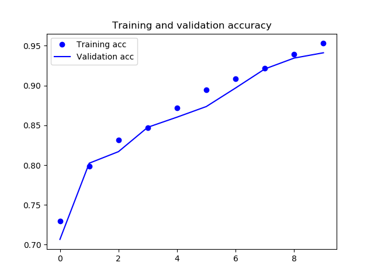
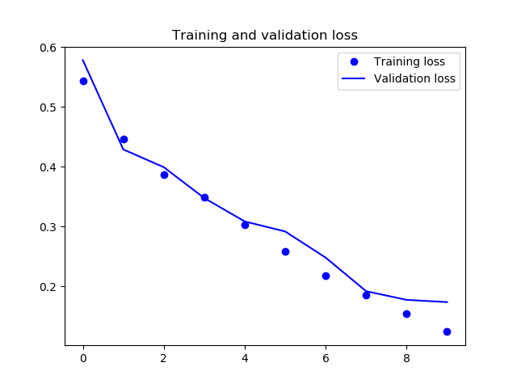
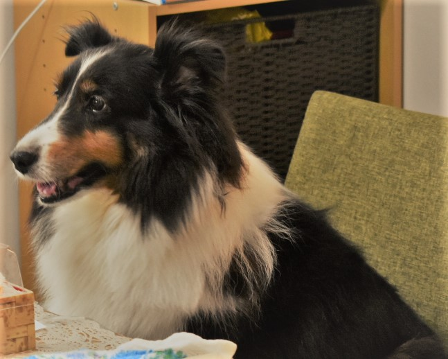

シェルティー判定 AI を作成する
謝辞
まず初めに参考にさせていただきました。 大変感謝申し上げます。
https://qiita.com/yottyann1221/items/a08300b572206075ee9f https://qiita.com/tomo_20180402/items/e8c55bdca648f4877188 https://qiita.com/mainvoidllll/items/db991dc30d3ddced6250 https://newtechnologylifestyle.net/keras_imagedatagenerator/
掲載している画像はフリー画像を使用させていただきました。 https://pixabay.com/ja/
序
機械学習に入門しました。 ざっとぐぐったところこんな感じで進めていくようです。
- 大量の画像を用意する
- 教師／テストデータを作成する
- モデルを作成する
- モデルで評価する
今回は、画像認識でシェルティー判定プログラムを作成することにしました。
環境構築
Windows 10 に chocolatey で python3 を入れました。 venv で仮想環境を構築し、必要なライブラリを入れます。
> mkdir -p e:\python\ml
> cd e:\python\ml
> python -m venv ml
> .\ml\Scripts\activate
(ml)> pip install requests
(ml)> pip install beautifulsoup4
# lxml を入れないと下のエラーが出る
# bs4.FeatureNotFound: Couldn't find a tree builder with the features you requested: lxml. Do you need to install a parser library?
(ml)> pip install lxml
(ml)> pip install pillow
# 最新の numpy 入れて np.load() すると下のエラーが出るので古いバージョンを指定する
# ValueError: Object arrays cannot be loaded when allow_pickle=False
(ml)> pip install numpy==1.16.2
(ml)> pip install sklearn
(ml)> pip install tensorflow
(ml)> pip install keras
(ml)> pip install matplotlib
構成
こんな構成にしました。
e:\python\ml
├─ml
└─src
├─data
│ ├─img
│ │ ├─original : スクレイピングして取得した元画像
│ │ │ ├─シェルティー
│ │ │ ├─コーギー
│ │ │ └─ボーダーコリー
│ │ ├─trimmed : 不要な画像を取り除いて残った画像
│ │ │ ├─シェルティー
│ │ │ ├─コーギー
│ │ │ └─ボーダーコリー
│ │ ├─excluded : 不要な画像
│ │ │ ├─シェルティー
│ │ │ ├─コーギー
│ │ │ └─ボーダーコリー
│ │ ├─extended : 残った画像を加工して水増しした画像
│ │ │ ├─シェルティー
│ │ │ ├─コーギー
│ │ │ └─ボーダーコリー
│ │ └─test : AI の動作確認用の画像
│ ├─train_test_data
│ │ └─data.npy : extended の画像を使って作成した教師／テストデータ
│ ├─model : 作成したモデル
│ │ ├─Training_and_validation_accuracy.png
│ │ ├─Training_and_validation_loss.png
│ │ ├─model_predict.hdf5
│ │ └─model_predict.json
├─img_scraper : 画像スクレイピング
│ ├─google_search.py
│ └─main.py
├─img_trimmer : 画像除去
│ └─main.py
├─img_duplicator : 画像水増し
│ └─main.py
├─train_test_data_generator : 教師／テストデータ作成
│ └─main.py
├─model_generator : モデル生成
│ └─main.py
└─ai : シェルティー判定
└─main.py
画像スクレイピング
まずは画像を用意します。 今回は 300 枚ずつスクレイピングしました。
img_scraper\google_search.py
# -- coding: utf-8 --
import json
from urllib import parse
import requests
from bs4 import BeautifulSoup
class Google:
def __init__(self):
self.GOOGLE_SEARCH_URL = 'https://www.google.co.jp/search'
self.session = requests.session()
self.session.headers.update({
'User-Agent': 'Mozilla/5.0 (X11; Linux x86_64; rv:57.0) Gecko/20100101 Firefox/57.0'})
def Search(self, keyword, type='text', maximum=1000):
'''Google検索'''
print('Google', type.capitalize(), 'Search :', keyword)
result, total = [], 0
query = self.query_gen(keyword, type)
while True:
# 検索
html = self.session.get(next(query)).text
links = self.get_links(html, type)
# 検索結果の追加
if not len(links):
print('-> No more links')
break
elif len(links) > maximum - total:
result += links[:maximum - total]
break
else:
result += links
total += len(links)
print('-> 結果', str(len(result)), 'のlinksを取得しました')
return result
def query_gen(self, keyword, type):
'''検索クエリジェネレータ'''
page = 0
while True:
if type == 'text':
params = parse.urlencode({
'q': keyword,
'num': '100',
'filter': '0',
'start': str(page * 100)})
elif type == 'image':
params = parse.urlencode({
'q': keyword,
'tbm': 'isch',
'filter': '0',
'ijn': str(page)})
yield self.GOOGLE_SEARCH_URL + '?' + params
page += 1
def get_links(self, html, type):
'''リンク取得'''
soup = BeautifulSoup(html, 'lxml')
if type == 'text':
elements = soup.select('.rc > .r > a')
links = [e['href'] for e in elements]
elif type == 'image':
elements = soup.select('.rg_meta.notranslate')
jsons = [json.loads(e.get_text()) for e in elements]
links = [js['ou'] for js in jsons]
return links
img_scraper\main.py
# -- coding: utf-8 --
import os
import requests
import google_search
# 検索キーワード
KEYWORDS = [u'シェルティー', u'コーギー', u'ボーダーコリー']
# 取得する画像数
IMG_CNT = 300
g = google_search.Google()
for keyword in KEYWORDS:
# 保存先作成
img_dir = os.path.join('./../data/img/original', keyword)
os.makedirs(img_dir, exist_ok=True)
print(u'保存先: {}'.format(img_dir))
# 画像検索
img_urls = g.Search('{} filetype:jpg -柴犬 -フェルト -商品 -おもちゃ -ぬいぐるみ -置物 -アイテム -マスコット -本 -表紙 -映画 -漫画 -チャーム -jpg -楽天市場 -イラスト -ステッカー -通販 -LINE -スタンプ -シルエット -デザイン -マグカップ -ブリーダー -ジモティー -集団 -群れ -ネイル -クレーン -景品 -製品'.format(keyword), type='image', maximum=IMG_CNT)
# 画像保存
total_cnt = 0
for i,img_url in enumerate(img_urls):
try:
# 画像パス
img_full_path = os.path.join(img_dir, (str(i) + '.jpg'))
print('{}: {} -> {}'.format(str(i), img_url, img_full_path))
re = requests.get(img_url, allow_redirects=False)
if len(re.content) <= 0:
print(u'{}: レスポンスの中身が空のためスキップします。'.format(str(i)))
continue
with open(img_full_path, 'wb') as f:
f.write(re.content)
total_cnt = total_cnt + 1
except requests.exceptions.ConnectionError:
continue
except UnicodeEncodeError:
continue
except UnicodeError:
continue
except IsADirectoryError:
continue
print(u'{}: {} 件の画像を取得しました。'.format(keyword, total_cnt))
print(u'保存完了しました。')
> cd e:\python\ml\src\img_scraper
> python main.py
シェルティー: 270 件の画像を取得しました。
コーギー: 286 件の画像を取得しました。
ボーダーコリー: 281 件の画像を取得しました。
数件はうまく画像を保存できなかったようです。
画像精査
教師データとして使えない画像を取り除きます。 例えば他の犬種が一緒に写っていたりテキストが大量に入っていたり…しているのでそういった画像の番号をメモします。 あとは Python で教師データに使用するデータと除外対象とを仕分けします。
img_trimmer\main.py
# -- coding: utf-8 --
import os, glob
import shutil
# 検索キーワード
KEYWORDS = [u'シェルティー', u'コーギー', u'ボーダーコリー']
targets = [
[19, 25, 34, 40, 41, 49, 54, 74, 77, 81, 86, 89, 91, 93, 102, 104, 108, 111, 118, 119, 124, 127, 130, 131, 132, 136, 152, 154, 158, 159, 161, 168, 169, 173, 178, 181, 183, 184, 192, 193, 198, 201, 202, 213, 218, 233, 235, 236, 238, 240, 243, 245, 246, 248, 249, 252, 255, 264, 265, 269, 271, 272, 280, 283, 284, 287, 294, 295],
[19, 29, 30, 40, 45, 67, 69, 73, 76, 78, 80, 100, 101, 105, 117, 120, 132, 136, 141, 143, 149, 151, 154, 158, 167, 170, 179, 180, 183, 186, 200, 201, 208, 213, 220, 224, 225, 228, 234, 235, 241, 243, 247, 248, 250, 253, 259, 262, 264, 266, 273, 277, 278, 279, 281, 282, 283, 285, 290, 293, 294, 298, 299],
[9, 21, 25, 37, 38, 40, 41, 42, 49, 52, 55, 61, 65, 66, 71, 72, 78, 80, 89, 93, 96, 103, 108, 110, 113, 114, 118, 122, 126, 127, 128, 145, 146, 152, 158, 160, 161, 164, 166, 167, 171, 174, 175, 176, 182, 183, 186, 187, 193, 194, 196, 197, 200, 202, 203, 206, 207, 222, 223, 224, 226, 228, 230, 232, 233, 234, 237, 238, 241, 243, 244, 257, 259, 260, 262, 263, 264, 265, 267, 268, 270, 273, 275, 276, 277, 278, 281, 282, 283, 287, 289, 292, 293, 295]
]
for idx, keyword in enumerate(KEYWORDS):
total_count = 0
# コピー元
img_dir = os.path.join('./../data/img/original', keyword)
# コピー先
os.makedirs(os.path.join('./../data/img/trimmed', keyword), exist_ok=True)
os.makedirs(os.path.join('./../data/img/excluded', keyword), exist_ok=True)
files = glob.glob(os.path.join(img_dir, '*.jpg'))
for f in files:
if int(os.path.splitext(os.path.basename(f))[0]) in targets[idx]:
shutil.copy2(f, os.path.join('./../data/img/excluded', keyword))
print(u'{} : 除外対象です。'.format(f))
else:
shutil.copy2(f, os.path.join('./../data/img/trimmed', keyword))
print(u'{} : 教師データに使用します。'.format(f))
total_count = total_count + 1
print(u'{} : 使用できるデータ数は {} 件です。'.format(keyword, total_count))
print(u'保存完了しました。')
> cd e:\python\ml\src\img_trimmer
> python main.py
シェルティー : 使用できるデータ数は 202 件です。
コーギー : 使用できるデータ数は 223 件です。
ボーダーコリー : 使用できるデータ数は 187 件です。
教師データとして使用できるのは 6 ～ 7 割となりました。
画像複製
Keras の ImageDataGenerator で画像を複製、加工することでデータ数を水増しします。
img_duplicator\main.py
# -- coding: utf-8 --
import os
import glob
import numpy as np
from keras.preprocessing.image import ImageDataGenerator, load_img, img_to_array, array_to_img
CATEGORIES = [u'シェルティー', u'コーギー', u'ボーダーコリー']
# 画像サイズ
IMG_SIZE = 150
# ImageDataGeneratorを定義
DATA_GENERATOR = ImageDataGenerator(horizontal_flip=0.3, zoom_range=0.1)
for idx, category in enumerate(CATEGORIES):
# コピー元
img_dir = os.path.join('./../data/img/trimmed', category)
# コピー先
out_dir = os.path.join('./../data/img/extended', category)
os.makedirs(out_dir, exist_ok=True)
files = glob.glob(os.path.join(img_dir, '*.jpg'))
for i, file in enumerate(files):
img = load_img(file)
img = img.resize((IMG_SIZE, IMG_SIZE))
x = img_to_array(img)
x = np.expand_dims(x, axis=0)
g = DATA_GENERATOR.flow(x, batch_size=1, save_to_dir=out_dir, save_prefix='img', save_format='jpg')
for i in range(10):
batch = g.next()
print(u'{} : ファイル数は {} 件です。'.format(category, len(os.listdir(out_dir))))
> cd e:\python\ml\src\img_duplicator
> python main.py
Using TensorFlow backend.
シェルティー : ファイル数は 1817 件です。
コーギー : ファイル数は 1983 件です。
ボーダーコリー : ファイル数は 1708 件です。
教師データ作成
大量の画像を用意したので教師データを作成します。 画像をラベリングしていきます。 全データの 2 割ほどをテストデータにまわします。 作成した教師／テストデータは保存しておきます。
train_test_data_generator\main.py
# -*- coding: utf-8 -*-
from PIL import Image
import os, glob
import numpy as np
import random, math
from sklearn.model_selection import train_test_split
from keras.utils import np_utils
# 画像が保存されているルートディレクトリのパス
IMG_ROOT_DIR = './../data/img/extended'
# カテゴリ
CATEGORIES = [u'シェルティー', u'コーギー', u'ボーダーコリー']
# 密度
DENSE_SIZE = len(CATEGORIES)
# 画像サイズ
IMG_SIZE = 150
# 画像データ
X = []
# カテゴリデータ
Y = []
# 教師データ
X_TRAIN = []
Y_TRAIN = []
# テストデータ
X_TEST = []
Y_TEST = []
# データ保存先
TRAIN_TEST_DATA = './../data/train_test_data/data.npy'
# カテゴリごとに処理する
for idx, category in enumerate(CATEGORIES):
# 各ラベルの画像ディレクトリ
image_dir = os.path.join(IMG_ROOT_DIR, category)
files = glob.glob(os.path.join(image_dir, '*.jpg'))
for f in files:
# 各画像をリサイズしてデータに変換する
img = Image.open(f)
img = img.convert('RGB')
img = img.resize((IMG_SIZE, IMG_SIZE))
data = np.asarray(img)
X.append(data)
Y.append(idx)
X = np.array(X)
Y = np.array(Y)
# 正規化
X = X.astype('float32') /255
Y = np_utils.to_categorical(Y, DENSE_SIZE)
# 教師データとテストデータを分ける
X_TRAIN, X_TEST, Y_TRAIN, Y_TEST = train_test_split(X, Y, test_size=0.20)
# 教師／テストデータを保存する
np.save(TRAIN_TEST_DATA, (X_TRAIN, X_TEST, Y_TRAIN, Y_TEST))
print(u'教師／テストデータの作成が完了しました。: {}'.format(TRAIN_TEST_DATA))
> cd e:\python\ml\src\train_test_data_generator
> python main.py
Using TensorFlow backend.
教師／テストデータの作成が完了しました。: ./../data/train_test_data/data.npy
モデル構築
教師／テストデータを用意できたのでいよいよモデルを構築します。 構築したモデルは保存しておきます。
model_generator\main.py
# -*- coding: utf-8 -*-
#モデルの構築
from keras import layers, models
from keras import optimizers
import numpy as np
import matplotlib.pyplot as plt
import os
# カテゴリ
CATEGORIES = [u'シェルティー', u'コーギー', u'ボーダーコリー']
# 密度
DENSE_SIZE = len(CATEGORIES)
# 画像サイズ
IMG_SIZE = 150
INPUT_SHAPE = (IMG_SIZE, IMG_SIZE,3)
# 教師データ
X_TRAIN = []
Y_TRAIN = []
# テストデータ
X_TEST = []
Y_TEST = []
# データ保存先
TRAIN_TEST_DATA = './../data/train_test_data/data.npy'
# モデル保存先
MODEL_ROOT_DIR = './../data/model/'
# ----- モデル構築 ----- #
model = models.Sequential()
model.add(layers.Conv2D(32,(3,3),activation="relu",input_shape=INPUT_SHAPE))
model.add(layers.MaxPooling2D((2,2)))
model.add(layers.Conv2D(64,(3,3),activation="relu"))
model.add(layers.MaxPooling2D((2,2)))
model.add(layers.Conv2D(128,(3,3),activation="relu"))
model.add(layers.MaxPooling2D((2,2)))
model.add(layers.Conv2D(128,(3,3),activation="relu"))
model.add(layers.MaxPooling2D((2,2)))
model.add(layers.Flatten())
model.add(layers.Dropout(0.5))
model.add(layers.Dense(512,activation="relu"))
model.add(layers.Dense(DENSE_SIZE,activation="sigmoid"))
#モデル構成の確認
model.summary()
# ----- /モデル構築 ----- #
# ----- モデルコンパイル ----- #
model.compile(loss="binary_crossentropy",
optimizer=optimizers.RMSprop(lr=1e-4),
metrics=["acc"])
# ----- /モデル構築 ----- #
# ----- モデル学習 ----- #
# 教師データとテストデータを読み込む
X_TRAIN, X_TEST, Y_TRAIN, Y_TEST = np.load(TRAIN_TEST_DATA)
model = model.fit(X_TRAIN,
Y_TRAIN,
epochs=10,
batch_size=6,
validation_data=(X_TEST, Y_TEST))
# ----- /モデル学習 ----- #
# ----- 学習結果プロット ----- #
acc = model.history['acc']
val_acc = model.history['val_acc']
loss = model.history['loss']
val_loss = model.history['val_loss']
epochs = range(len(acc))
plt.plot(epochs, acc, 'bo', label='Training acc')
plt.plot(epochs, val_acc, 'b', label='Validation acc')
plt.title('Training and validation accuracy')
plt.legend()
plt.savefig(os.path.join(MODEL_ROOT_DIR, 'Training_and_validation_accuracy.png'))
plt.figure()
plt.plot(epochs, loss, 'bo', label='Training loss')
plt.plot(epochs, val_loss, 'b', label='Validation loss')
plt.title('Training and validation loss')
plt.legend()
plt.savefig(os.path.join(MODEL_ROOT_DIR, 'Training_and_validation_loss.png'))
# ----- /学習結果プロット ----- #
# ----- モデル保存 ----- #
# モデル保存
json_string = model.model.to_json()
open(os.path.join(MODEL_ROOT_DIR, 'model_predict.json'), 'w').write(json_string)
#重み保存
model.model.save_weights(os.path.join(MODEL_ROOT_DIR, 'model_predict.hdf5'))
# ----- /モデル保存 ----- #
> cd e:\python\ml\src\model_generator
> python main.py
Using TensorFlow backend.
2019-11-15 17:02:03.400229: I tensorflow/core/platform/cpu_feature_guard.cc:142] Your CPU supports instructions that this TensorFlow binary was not compiled to use: AVX2
Model: "sequential_1"
_________________________________________________________________
Layer (type) Output Shape Param #
=================================================================
conv2d_1 (Conv2D) (None, 148, 148, 32) 896
_________________________________________________________________
max_pooling2d_1 (MaxPooling2 (None, 74, 74, 32) 0
_________________________________________________________________
conv2d_2 (Conv2D) (None, 72, 72, 64) 18496
_________________________________________________________________
max_pooling2d_2 (MaxPooling2 (None, 36, 36, 64) 0
_________________________________________________________________
conv2d_3 (Conv2D) (None, 34, 34, 128) 73856
_________________________________________________________________
max_pooling2d_3 (MaxPooling2 (None, 17, 17, 128) 0
_________________________________________________________________
conv2d_4 (Conv2D) (None, 15, 15, 128) 147584
_________________________________________________________________
max_pooling2d_4 (MaxPooling2 (None, 7, 7, 128) 0
_________________________________________________________________
flatten_1 (Flatten) (None, 6272) 0
_________________________________________________________________
dropout_1 (Dropout) (None, 6272) 0
_________________________________________________________________
dense_1 (Dense) (None, 512) 3211776
_________________________________________________________________
dense_2 (Dense) (None, 3) 1539
=================================================================
Total params: 3,454,147
Trainable params: 3,454,147
Non-trainable params: 0
_________________________________________________________________
Train on 4396 samples, validate on 1100 samples
Epoch 1/10
4396/4396 [==============================] - 103s 23ms/step - loss: 0.5434 - acc: 0.7298 - val_loss: 0.5780 - val_acc: 0.7067
Epoch 2/10
4396/4396 [==============================] - 109s 25ms/step - loss: 0.4457 - acc: 0.7989 - val_loss: 0.4288 - val_acc: 0.8024
Epoch 3/10
4396/4396 [==============================] - 103s 23ms/step - loss: 0.3874 - acc: 0.8318 - val_loss: 0.3992 - val_acc: 0.8170
Epoch 4/10
4396/4396 [==============================] - 106s 24ms/step - loss: 0.3483 - acc: 0.8469 - val_loss: 0.3476 - val_acc: 0.8476
Epoch 5/10
4396/4396 [==============================] - 107s 24ms/step - loss: 0.3029 - acc: 0.8717 - val_loss: 0.3085 - val_acc: 0.8603
Epoch 6/10
4396/4396 [==============================] - 109s 25ms/step - loss: 0.2580 - acc: 0.8947 - val_loss: 0.2918 - val_acc: 0.8736
Epoch 7/10
4396/4396 [==============================] - 107s 24ms/step - loss: 0.2182 - acc: 0.9084 - val_loss: 0.2481 - val_acc: 0.8970
Epoch 8/10
4396/4396 [==============================] - 113s 26ms/step - loss: 0.1855 - acc: 0.9217 - val_loss: 0.1920 - val_acc: 0.9209
Epoch 9/10
4396/4396 [==============================] - 120s 27ms/step - loss: 0.1548 - acc: 0.9394 - val_loss: 0.1775 - val_acc: 0.9345
Epoch 10/10
4396/4396 [==============================] - 114s 26ms/step - loss: 0.1243 - acc: 0.9530 - val_loss: 0.1738 - val_acc: 0.9412


シェルティー判定プログラム作成
いよいよシェルティー判定プログラムを用意するときがきました。 確認用の画像を用意していよいよ実行です。
ai\main.py
# -*- coding: utf-8 -*-
from keras import models
from keras.models import model_from_json
from keras.preprocessing import image
import numpy as np
import sys
import os
from keras.preprocessing.image import ImageDataGenerator, load_img, img_to_array, array_to_img
# モデル保存先
MODEL_ROOT_DIR = './../data/model/'
MODEL_PATH = os.path.join(MODEL_ROOT_DIR, 'model_predict.json')
WEIGHT_PATH = os.path.join(MODEL_ROOT_DIR, 'model_predict.hdf5')
# カテゴリ
CATEGORIES = [u'シェルティー', u'コーギー', u'ボーダーコリー']
# 画像サイズ
IMG_SIZE = 150
INPUT_SHAPE = (IMG_SIZE, IMG_SIZE,3)
# モデルを読み込む
model = model_from_json(open(MODEL_PATH).read())
model.load_weights(WEIGHT_PATH)
# 入力引数から画像を読み込む
args = sys.argv
img = image.load_img(args[1], target_size=INPUT_SHAPE)
x = image.img_to_array(img)
x = np.expand_dims(x, axis=0)
# モデルで予測する
features = model.predict(x)
print(features)
if features[0, 0] == 1:
print(u'シェルティーです。')
else:
for i in range(0, len(CATEGORIES)):
if features[0, i] == 1:
print(u'シェルティーではないようです。{}です。'.format(CATEGORIES[i]))
(ml)> cd e:\python\ml\src\ai
(ml)> python .\main.py '..\data\img\test\sheltie_00.jpg'
Using TensorFlow backend.
2019-11-15 17:58:44.863437: I tensorflow/core/platform/cpu_feature_guard.cc:142] Your CPU supports instructions that this TensorFlow binary was not compiled to use: AVX2
[[1. 0. 0.]]
シェルティーです。
(ml)> python .\main.py '..\data\img\test\corgi_00.jpg'
Using TensorFlow backend.
2019-11-15 17:58:55.519838: I tensorflow/core/platform/cpu_feature_guard.cc:142] Your CPU supports instructions that this TensorFlow binary was not compiled to use: AVX2
[[0. 1. 0.]]
シェルティーではないようです。コーギーです。
(ml)> python .\main.py '..\data\img\test\bordercollie_00.jpg'
Using TensorFlow backend.
2019-11-15 17:59:06.457517: I tensorflow/core/platform/cpu_feature_guard.cc:142] Your CPU supports instructions that this TensorFlow binary was not compiled to use: AVX2
[[0. 0. 1.]]
シェルティーではないようです。ボーダーコリーです。
sheltie_00.jpg シェルティーです。
cogy_00.jpg シェルティーではないようです。コーギーです。
bordercolli_00.png シェルティーではないようです。ボーダーコリーです。
いい感じに判定できました。
フランちゃんはシェルティー？
アイコンにも使用しているフランちゃんはどう判定されるでしょう。
(ml)> python .\main.py '..\data\img\test\fran.jpg'
Using TensorFlow backend.
2019-11-15 17:59:28.118592: I tensorflow/core/platform/cpu_feature_guard.cc:142] Your CPU supports instructions that this TensorFlow binary was not compiled to use: AVX2
[[0. 0. 1.]]
シェルティーではないようです。ボーダーコリーです。
fran.png シェルティーではないようです。ボーダーコリーです。

残念。。。 うちのフランちゃんはシェルティーなのに「シェルティーではないようです。ボーダーコリーです。」と判定されました。 理由はおそらく教師データに黒いシェルティーが少なかったからだと考えられます。 教師データの重要性を痛感しました。
展望
- 教師データに黒いシェルティーを追加してリベンジする
- Web アプリに AI を組み込む